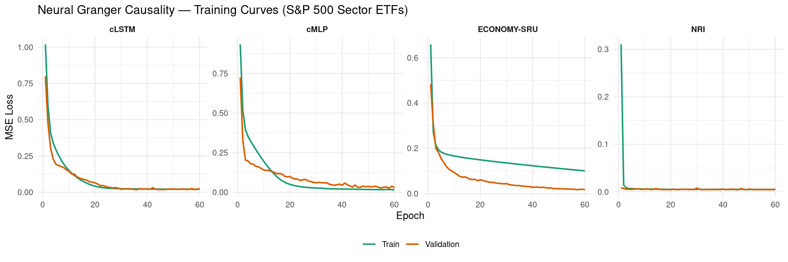
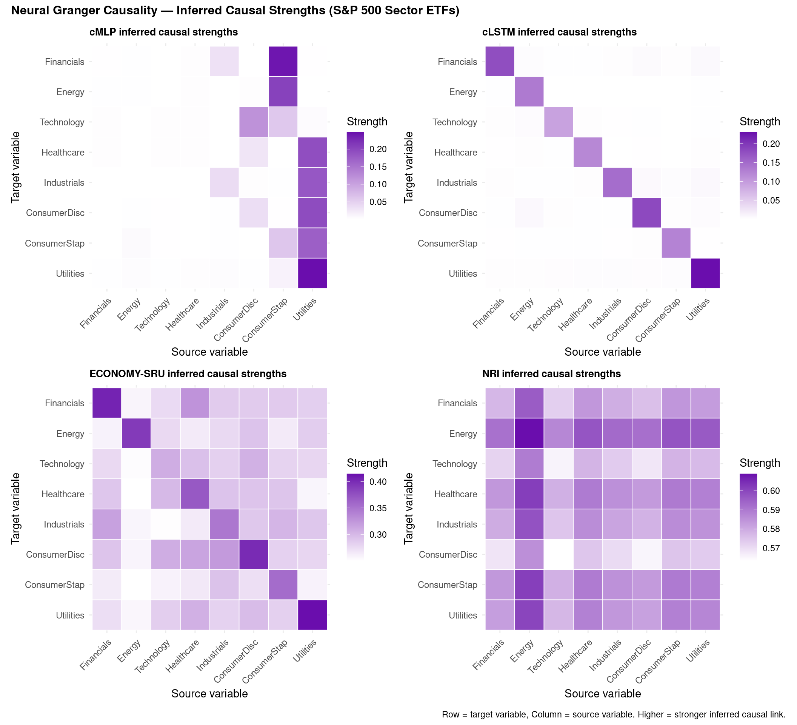
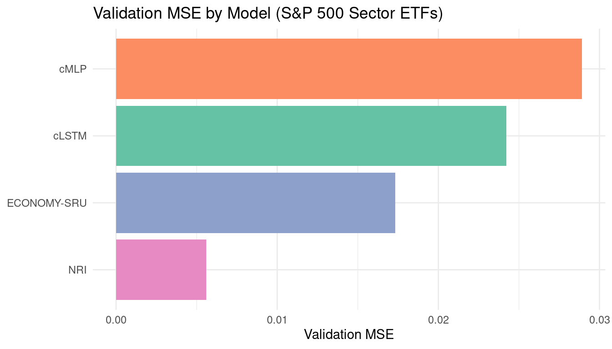
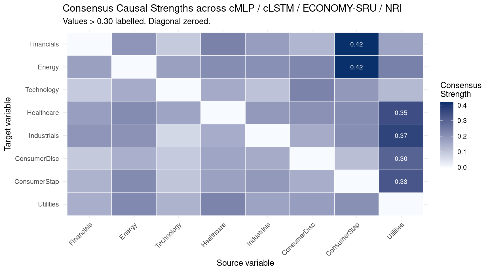

Code
packages <- c(
'tidyverse',
'plyr',
'RCausalML',
'torch',
'tidyquant',
'reshape2',
'scales'
)

Neural Granger Causality extends the classical Granger framework into the nonlinear regime by replacing linear coefficient blocks with neural networks while preserving the sparse input-selection logic of group LASSO. The result is a family of models that discover who causes whom in a multivariate time series without assuming linearity.
If a neural network trained to predict \(Y_t\) assigns zero (or near-zero) weight to all lags of \(X\), then \(X\) does not Granger-cause \(Y\) — regardless of how complex the network is.
Classical Granger causality tests whether past values of \(X\) significantly improve the forecast of \(Y\) beyond what \(Y\)’s own history provides. For lag order \(p\) this is the vector autoregression (VAR):
\[ Y_t = \sum_{k=1}^{p} A_k Y_{t-k} + \epsilon_t \]
If the coefficient block connecting \(X_{t-k} \rightarrow Y_t\) is nonzero, then \(X\) Granger-causes \(Y\). The method is powerful but inherently linear and can miss nonlinear dynamics.
Neural Granger Causality solves this by replacing the fixed coefficient \(A_k\) with a learned nonlinear function, while enforcing structured sparsity — specifically group LASSO — on the input layer weights. A zero group norm for all lags of variable \(X\) means \(X\) is excluded from predicting \(Y\).
A separate MLP is trained for each target variable \(Y_i\):
\[ \hat{Y}_{i,t} = \text{MLP}_i\!\left(Y_{1,t-1:t-p},\ldots,Y_{d,t-1:t-p}\right) \]
Training objective:
\[ \mathcal{L} = \underbrace{\text{MSE}}_{\text{prediction}} + \lambda \underbrace{\sum_j \lVert W_j^{(1)} \rVert_F}_{\text{group LASSO on input weights}} \]
Sparsity on the first-layer weight block \(W_j^{(1)}\) (columns corresponding to all lags of variable \(j\)) causes entire input variables to be selected or zeroed out, making the inferred causal graph readable directly from those norms.
One LSTM per target variable. Better for sequential / long-lag dynamics:
\[ h_t = \text{LSTM}_i(Y_{1:d,\ t-p:t-1}), \qquad \hat{Y}_{i,t} = W_{\text{out}} h_t \]
Group LASSO is applied to the LSTM input-weight matrix \(W_{ih}\), grouping all gates for each source variable \(j\) together.
A simplified GRU with an explicit learnable causal mask:
\[ G \in [0,1]^{d \times d}, \qquad G_{ij} = \sigma(\theta_{ij}) \]
The mask gates each variable’s contribution to every other variable’s GRU update. Sparsity is induced by an \(\ell_1\) penalty \(\lambda \sum_{ij} G_{ij}\) on the mask, driving weak links to zero.
NRI (Kipf et al., 2018) is a graph-VAE approach that simultaneously learns edge types and dynamics:
\[ \mathcal{L} = \mathbb{E}_{q(z\mid X)}[\log p(X\mid z)] - \mathrm{KL}[q(z\mid X)\|p(z)] \]
The posterior probability of a causal edge between each variable pair forms the inferred adjacency matrix.
We use {RCausalML}’s neural_granger_ml() wrapper — which packages all four models (cMLP, cLSTM, EconomySRU, NRI) — trained on daily log returns of S&P 500 sector ETFs (2018–2023).
packages <- c(
'tidyverse',
'plyr',
'RCausalML',
'torch',
'tidyquant',
'reshape2',
'scales'
)# Install missing packages
#new_packages <- packages[!(packages %in% installed.packages()[,"Package"])]
#if(length(new_packages)) install.packages(new_packages)invisible(lapply(packages, function(pkg) {
suppressPackageStartupMessages(library(pkg, character.only = TRUE))
}))set.seed(42)
if (requireNamespace("torch", quietly = TRUE)) {
torch_manual_seed(42)
device_use <- if (torch::cuda_is_available()) "cuda" else "cpu"
cat(sprintf("Using device: %s\n", device_use))
} else {
device_use <- "cpu"
cat("torch not available; some models will be skipped.\n")
}Using device: cudaWe fetch daily adjusted closing prices for eight major S&P 500 sector ETFs using tidyquant, compute daily log returns, standardise them (zero mean, unit variance), and store them in a matrix data_np with columns named after each sector.
The sector ETFs are:
| Ticker | Sector |
|---|---|
| XLF | Financials |
| XLE | Energy |
| XLK | Technology |
| XLV | Healthcare |
| XLI | Industrials |
| XLY | Consumer Discretionary |
| XLP | Consumer Staples |
| XLU | Utilities |
TICKERS <- c(
XLF = "Financials",
XLE = "Energy",
XLK = "Technology",
XLV = "Healthcare",
XLI = "Industrials",
XLY = "ConsumerDisc",
XLP = "ConsumerStap",
XLU = "Utilities"
)
# Download adjusted closing prices via tidyquant
raw_prices <- tq_get(
names(TICKERS),
from = "2018-01-01",
to = "2024-01-01",
get = "stock.prices"
) |>
select(symbol, date, adjusted) |>
pivot_wider(names_from = symbol, values_from = adjusted) |>
arrange(date)
# Daily log returns; drop the first row (NA from lag)
returns_mat <- raw_prices |>
select(-date) |>
mutate(across(everything(), ~ log(. / lag(.)))) |>
slice(-1)
# Rename columns to sector names (match TICKERS order)
colnames(returns_mat) <- TICKERS[colnames(returns_mat)]
cat(sprintf("Shape: %d rows x %d columns\n", nrow(returns_mat), ncol(returns_mat)))Shape: 1508 rows x 8 columns Financials Energy Technology Healthcare Industrials ConsumerDisc
mean 28.1609 26.0819 56.1375 102.2712 80.5216 68.0682
sd 5.1841 8.2469 18.7454 20.2772 14.6832 14.6253
min 15.7849 9.1791 26.9404 67.4720 44.3860 41.3688
max 38.3282 42.4032 95.0522 133.0996 110.3493 101.5973
ConsumerStap Utilities
mean 56.4106 26.4479
sd 9.4409 3.9784
min 39.2040 18.2301
max 71.8551 34.6272
Variables (8): Financials, Energy, Technology, Healthcare, Industrials, ConsumerDisc, ConsumerStap, UtilitiesTime steps: 1508# Standardise to zero mean / unit variance (as float32 equivalent in R)
col_means <- colMeans(returns_mat, na.rm = TRUE)
col_sds <- apply(returns_mat, 2, sd, na.rm = TRUE)
col_sds[col_sds == 0] <- 1
data_np <- scale(as.matrix(returns_mat), center = col_means, scale = col_sds)
storage.mode(data_np) <- "double"
cat("Standardised data: first 5 rows\n")Standardised data: first 5 rows Financials Energy Technology Healthcare Industrials ConsumerDisc
[1,] -0.8164 -0.0165 -1.3897 -1.4388 -0.9585 -1.4819
[2,] -0.7736 0.0025 -1.3816 -1.4337 -0.9254 -1.4715
[3,] -0.7605 0.0012 -1.3647 -1.4029 -0.8940 -1.4463
[4,] -0.7670 0.0202 -1.3585 -1.4161 -0.8751 -1.4425
[5,] -0.7309 0.0122 -1.3627 -1.3734 -0.8455 -1.4362
ConsumerStap Utilities
[1,] -1.2101 -1.6590
[2,] -1.1966 -1.7004
[3,] -1.1755 -1.7024
[4,] -1.1637 -1.6561
[5,] -1.1704 -1.7053For neural Granger causality we frame the multivariate time series as a supervised regression problem: given all variables over a lag window of \(p\) steps, predict the next values. Sparsity in the first-layer weights then reveals the causal structure.
LAG <- 5L # Trading week
build_lag_dataset <- function(data, lag) {
n <- nrow(data) - lag
d <- ncol(data)
x_flat <- matrix(0, nrow = n, ncol = d * lag)
x_seq <- array(0, dim = c(n, lag, d))
y <- matrix(0, nrow = n, ncol = d)
for (t in seq_len(n)) {
window <- data[t:(t + lag - 1), , drop = FALSE] # (lag, d)
x_flat[t, ] <- as.vector(t(window)) # row-major flatten: (d*lag,)
x_seq[t, , ] <- window
y[t, ] <- data[t + lag, ]
}
colnames(y) <- colnames(data)
list(x_flat = x_flat, x_seq = x_seq, y = y)
}
prep <- build_lag_dataset(data_np, LAG)
n_total <- nrow(prep$y)
split_idx <- floor(0.8 * n_total)
x_flat_tr <- prep$x_flat[seq_len(split_idx), , drop = FALSE]
x_flat_val <- prep$x_flat[(split_idx + 1L):n_total, , drop = FALSE]
x_seq_tr <- prep$x_seq[seq_len(split_idx), , , drop = FALSE]
x_seq_val <- prep$x_seq[(split_idx + 1L):n_total, , , drop = FALSE]
y_tr <- prep$y[seq_len(split_idx), , drop = FALSE]
y_val <- prep$y[(split_idx + 1L):n_total, , drop = FALSE]
cat(sprintf(
"Train: x_flat %s | Val: x_flat %s\n",
paste(dim(x_flat_tr), collapse = " x "),
paste(dim(x_flat_val), collapse = " x ")
))Train: x_flat 1202 x 40 | Val: x_flat 301 x 40{RCausalML}’s neural_granger_ml() trains cMLP, cLSTM, EconomySRU, and NRI in a single call. Under the hood each model is a torch nn_module; training uses Adam with gradient clipping and group-LASSO / sparsity regularisation.
EPOCHS <- 60L
LAM <- 0.005
HIDDEN <- 32L
LR <- 5e-4
BATCH_SIZE <- 32L
cat("Fitting Neural Granger Causality models via RCausalML::neural_granger_ml() ...\n")Fitting Neural Granger Causality models via RCausalML::neural_granger_ml() ...ngc_fit <- neural_granger_ml(
data = data_np,
lag = LAG,
models = c("cmlp", "clstm", "economysru", "nri"),
hidden = HIDDEN,
lam = LAM,
epochs = EPOCHS,
batch_size = BATCH_SIZE,
lr = LR,
val_split = 0.2,
n_edge_types = 2L,
temp = 0.5,
device = device_use,
verbose = TRUE
)
cat("\nTraining complete. Validation MSE per model:\n")
Training complete. Validation MSE per model:val_mse_df <- data.frame(
Model = names(ngc_fit$val_mse),
Val_MSE = unlist(ngc_fit$val_mse),
Val_RMSE = sqrt(unlist(ngc_fit$val_mse)),
row.names = NULL
)
val_mse_df <- val_mse_df[order(val_mse_df$Val_MSE), ]
val_mse_df[, sapply(val_mse_df, is.numeric)] <- round(
val_mse_df[, sapply(val_mse_df, is.numeric)], 6)
print(val_mse_df) Model Val_MSE Val_RMSE
4 nri 0.005610 0.074897
3 economysru 0.017325 0.131625
2 clstm 0.024223 0.155637
1 cmlp 0.028917 0.170050model_labels <- c(cmlp = "cMLP", clstm = "cLSTM", economysru = "ECONOMY-SRU", nri = "NRI")
loss_list <- lapply(names(ngc_fit$histories), function(m) {
h <- ngc_fit$histories[[m]]
data.frame(
model = model_labels[m],
epoch = seq_along(h$train_loss),
train = h$train_loss,
val = h$val_loss
)
})
loss_df <- bind_rows(loss_list)
loss_long <- loss_df |>
pivot_longer(cols = c(train, val), names_to = "split", values_to = "loss") |>
mutate(split = factor(split, levels = c("train", "val"), labels = c("Train", "Validation")))
ggplot(loss_long, aes(x = epoch, y = loss, color = split)) +
geom_line(linewidth = 0.8) +
facet_wrap(~ model, nrow = 1, scales = "free_y") +
scale_color_manual(values = c(Train = "#1b9e77", Validation = "#d95f02")) +
labs(
title = "Neural Granger Causality — Training Curves (S&P 500 Sector ETFs)",
x = "Epoch",
y = "MSE Loss",
color = NULL
) +
theme_minimal() +
theme(legend.position = "bottom", strip.text = element_text(face = "bold"))
Each model produces a \(d \times d\) matrix where entry \((i, j)\) encodes the strength of influence from source variable \(j\) to target variable \(i\):
plot_causal_heatmap <- function(mat, title, var_names) {
mat_df <- as.data.frame(mat)
colnames(mat_df) <- var_names
rownames(mat_df) <- var_names
mat_long <- mat_df |>
rownames_to_column("Target") |>
pivot_longer(-Target, names_to = "Source", values_to = "Strength") |>
mutate(
Target = factor(Target, levels = rev(var_names)),
Source = factor(Source, levels = var_names)
)
ggplot(mat_long, aes(x = Source, y = Target, fill = Strength)) +
geom_tile(color = "white", linewidth = 0.3) +
scale_fill_gradient(low = "white", high = "#6a0dad", name = "Strength") +
labs(title = title, x = "Source variable", y = "Target variable") +
theme_minimal() +
theme(
axis.text.x = element_text(angle = 45, hjust = 1, size = 9),
axis.text.y = element_text(size = 9),
plot.title = element_text(face = "bold", size = 10)
)
}
p_cmlp <- plot_causal_heatmap(
ngc_fit$causal_matrices$cmlp, "cMLP inferred causal strengths", VAR_NAMES)
p_clstm <- plot_causal_heatmap(
ngc_fit$causal_matrices$clstm, "cLSTM inferred causal strengths", VAR_NAMES)
p_sru <- plot_causal_heatmap(
ngc_fit$causal_matrices$economysru, "ECONOMY-SRU inferred causal strengths", VAR_NAMES)
p_nri <- plot_causal_heatmap(
ngc_fit$causal_matrices$nri, "NRI inferred causal strengths", VAR_NAMES)
library(patchwork)
(p_cmlp | p_clstm) / (p_sru | p_nri) +
plot_annotation(
title = "Neural Granger Causality — Inferred Causal Strengths (S&P 500 Sector ETFs)",
caption = "Row = target variable, Column = source variable. Higher = stronger inferred causal link.",
theme = theme(plot.title = element_text(face = "bold", size = 12))
)
val_mse_plot <- data.frame(
Model = model_labels[names(ngc_fit$val_mse)],
Val_MSE = unlist(ngc_fit$val_mse)
)
ggplot(val_mse_plot, aes(x = reorder(Model, Val_MSE), y = Val_MSE, fill = Model)) +
geom_col(show.legend = FALSE) +
scale_fill_brewer(palette = "Set2") +
labs(
title = "Validation MSE by Model (S&P 500 Sector ETFs)",
x = NULL,
y = "Validation MSE"
) +
coord_flip() +
theme_minimal()
Average the causal matrices across all four models (after min-max normalisation) to derive a consensus strength for each directed variable pair.
minmax <- function(m) {
rng <- range(m)
if (diff(rng) < 1e-10) return(matrix(0, nrow(m), ncol(m)))
(m - rng[1]) / diff(rng)
}
mats_norm <- lapply(ngc_fit$causal_matrices, minmax)
consensus <- Reduce("+", mats_norm) / length(mats_norm)
rownames(consensus) <- VAR_NAMES
colnames(consensus) <- VAR_NAMES
diag(consensus) <- 0
cat("Consensus causal matrix (min-max normalised, diagonal zeroed):\n")Consensus causal matrix (min-max normalised, diagonal zeroed): Financials Energy Technology Healthcare Industrials ConsumerDisc
Financials 0.000 0.195 0.092 0.234 0.180 0.130
Energy 0.173 0.000 0.172 0.211 0.205 0.225
Technology 0.091 0.151 0.000 0.153 0.107 0.231
Healthcare 0.176 0.213 0.165 0.000 0.187 0.203
Industrials 0.195 0.202 0.065 0.149 0.000 0.151
ConsumerDisc 0.094 0.142 0.091 0.162 0.150 0.000
ConsumerStap 0.135 0.216 0.101 0.171 0.188 0.146
Utilities 0.145 0.219 0.135 0.230 0.168 0.178
ConsumerStap Utilities
Financials 0.418 0.166
Energy 0.418 0.237
Technology 0.189 0.123
Healthcare 0.210 0.346
Industrials 0.210 0.371
ConsumerDisc 0.115 0.300
ConsumerStap 0.000 0.328
Utilities 0.206 0.000# Visualise as a heatmap
consensus_long <- as.data.frame(consensus) |>
rownames_to_column("Target") |>
pivot_longer(-Target, names_to = "Source", values_to = "Strength") |>
mutate(
Target = factor(Target, levels = rev(VAR_NAMES)),
Source = factor(Source, levels = VAR_NAMES)
)
ggplot(consensus_long, aes(x = Source, y = Target, fill = Strength)) +
geom_tile(color = "white", linewidth = 0.3) +
geom_text(aes(label = ifelse(Strength > 0.3, sprintf("%.2f", Strength), "")),
size = 3, color = "white") +
scale_fill_gradient(low = "#f7fbff", high = "#08306b", name = "Consensus\nStrength") +
labs(
title = "Consensus Causal Strengths across cMLP / cLSTM / ECONOMY-SRU / NRI",
subtitle = "Values > 0.30 labelled. Diagonal zeroed.",
x = "Source variable",
y = "Target variable"
) +
theme_minimal() +
theme(axis.text.x = element_text(angle = 45, hjust = 1))
LAG, LAM, HIDDEN, and EPOCHS to trade off fit vs. sparsity. Increasing LAM produces sparser, more interpretable graphs; decreasing it may reveal weaker relationships.neural_granger_ml() call; the returned object contains trained models, per-epoch histories, validation MSEs, and \(d \times d\) causal matrices ready for downstream analysis.neural_granger_ml() in R/causalDeepNet.R